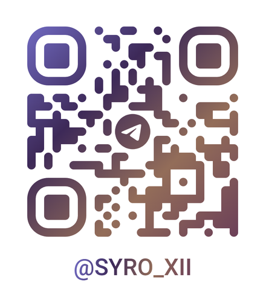

О проекте
НейроБукварь — учебный сайт, который объясняет нейросети и искусственный интеллект простыми словами. Он написан для тех, кто только знакомится с темой.
Для кого этот сайт
Сайт рассчитан на взрослого новичка, который слышал про ChatGPT, но не понимает, что за ним стоит: школьника старших классов, студента нетехнической специальности, родителя, человека старшего возраста или сотрудника, которому «сказали разобраться». Здесь есть ответы на вопросы вроде «нейросеть думает как человек?», «можно ли ей доверять?», «нужно ли уметь программировать?».
Автор
Автор проекта — Алексей Сыроежкин (псевдоним).
Связаться с автором
Напишите, если нашли ошибку или устаревший факт, хотите предложить тему или просто задать вопрос по сайту.
- Telegram: @syro_xii
- Почта Google: alexeysyroezhka@gmail.com
- Почта Яндекс: alexey.syroezhkin@yandex.ru
Или наведите камеру телефона на QR-код, чтобы открыть Telegram автора:

Как сделан сайт
Сайт сделан с помощью искусственного интеллекта. Схемы и страницы создавала нейросеть Claude (компания Anthropic), а автор предоставил информацию в виде текста, а затем задал тему, структуру и требования. Автор принимал решения по содержанию и проверял результат. Информация может устаревать, поэтому важные сведения проверяйте по другим источникам, а если заметите неточность, напишите автору.
Откуда информация
Список источников, на которые опирается сайт, и материалы для дальнейшего чтения собраны в разделе «Что почитать дальше». Сайт учебный: он помогает разобраться в теме, но не заменяет консультацию юриста, врача, финансового или другого специалиста.
Лицензия
Тексты и схемы сайта распространяются по лицензии Creative Commons «Атрибуция» 4.0 (CC BY 4.0). Их можно копировать, пересказывать, переделывать и использовать, в том числе в коммерческих целях, если указать автора — Алексея Сыроежкина — и дать ссылку на этот сайт. Названия и логотипы сервисов принадлежат их владельцам и лицензией не затрагиваются.
Шрифты
Сайт набран шрифтами Manrope и Golos Text. Оба распространяются по свободной лицензии SIL Open Font License 1.1. Тексты лицензий лежат в папке fonts-licenses на сайте.
Конфиденциальность
Сайт не собирает и не передаёт персональные данные, не использует счётчики и рекламу. В вашем браузере хранятся только отметки о прочитанных разделах и выбранная тема оформления: они остаются на вашем устройстве, и их можно стереть, очистив данные сайта в браузере. Если вы напишете автору, он увидит только то, что вы сами отправите.
Обновлено: 5 ноября 2026.